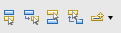
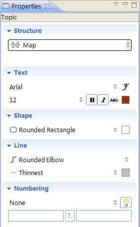

Topic Type
XMind has four principal topic types:

Central Topic: Every map has just one central topic, which is inserted automatically when the map is created. When you save a workbook as an XMind file, the default name of the XMind file becomes the text within the Central Topic.
Main Topic: Main Topics are the first level of boxes around the Central Topic. You can note ideas that are directly related to the central topic here.
Subtopic: Subtopics are added to main topics and main floating topics. You can record further details about ideas here.
Floating Topic: Floating Topics do not belong to any other topics, and can be located anywhere on the map as a standalone idea. There are two types of floating topics: a Floating Central Topic and a Floating main topic.
Create Topic
- There are several ways to create topics:
- Choose 'Insert' on the Menu and select:
- Topic to create a main topic or a topic on the same level as the currently selected topic.
- Subtopic to create subtopic off of the currently selected topic.
- Before Topic to create a topic on the same level, but before the current topic.
- Parent Topic to create a parent of the currently selected topic.
- Floating 'Central' Topic to create a floating topic which has the same attributes as the central topic.
- Floating Topic to create a floating topic which has the same attributes as a main topic.
- Click one of create topic icons on the toolbar:
 - Use shortcuts:
- Enter : create a main topic or a topic on the same level as the currently selected topic.
- Tab/Insert: create a subtopic of the currently selected topic.
- Shift +Enter: create a topic on the same level, but before the currently selected topic.
- Ctrl +Enter: create a parent topic of the current selected topic.
- Use mouse:
- Right-click to open the context menu: select 'Insert' > 'Topic' or 'Subtopic' to create a topic or subtopic.
- Double-click on a blank space on the map to create a floating main topic.
- Select map, and Right-click to open context menu: select and create "Floating Topic" or "Floating 'Central' Topic".
Note: You should select a topic before creating subtopics.
Edit Topic
You can edit and delete topic easily by following the steps below:
- Select a topic.
- You have four ways to open the Editing mode:
- Right-click and choose 'Edit' on the menu.
- Double click the topic.
- Press "F2" on your keyboard.
- Click "Spacebar" on your keyboard.
- You have four options to delete a topic:
- Choose "Edit > Delete" on the menu.
- Right-click and choose 'Delete'.
- Click delete icon on the toolbar.
- Use shortcut key: "Delete"
You can also set the width of the topic box through the following steps:
- Select a topic, and enter into Edit Mode.
- Drag and move the slide on the right of the topic box to change the Topic Width.

Note: The topic width will adjust to the width of the texst as you add text, but you can make the width narrower by dragging the slide as described above.
Topic Properties
- Select the Topic.
- Open the Properties view.
- You can make the following changes to the topic:
- Structure: select the structure type in the drop-down list of this topic and its subtopics.
- Text: change the 'Text Font', 'Size', 'Type', 'Color', and 'Alignment'.
- Shape: select boundary type and background color of topic.
- Line: change the line type, width, and color, which link this topic and its subtopic.
- Numbering:
- Choose number style: There are four styles for choice, and None to cancel number.
- Inherit parents' number: Enabling this will let subtopics inherit the number from parents' topics.
- Pre and Suf: You can enter prefix number in the Pre field to appear before the Number, or enter suffix numbers in the Suf field to appear after "dot".

Free Position
The default rule in XMind is to arrange the topics around the central topic from right to left, and from up to down automatically. You can change this by:
- Select the topic(s).
- Move the topic while pressing the following keys:
- Ctrl(Alt on Mac) : Copy selected topic(s) to new position.
- Alt(Command on Mac) : Move selected Main Topic(s) to new position as desired.
- Shift : Move selected topic(s) to new position as floating topic(s).